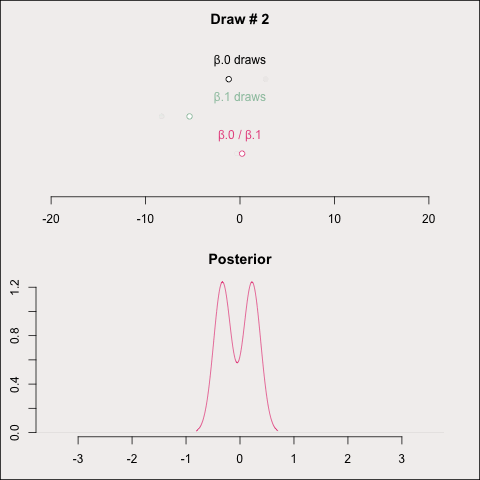
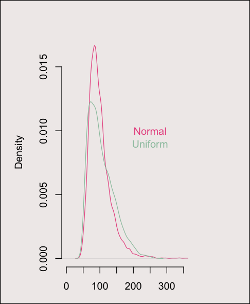

Should I Buy a Bread Machine? A Monte Carlo Simulation1. Introduction Recently, I stumbled on this video which uses a break-even analysis as a vehicle to talk about coding defensively, particularly when you are piecing together chunks of code from LLMs. In this video, some interesting points came up about modeling uncertainty and I thought I would try to replicate the analysis using a Monte Carlo simulation. There needs to be some uncertainty \( \; [\cdots] \; \) and what I wanted to do was to model that as a uniform distribution. Well, I took issue with this. 2. Defining Our ParametersThere are a few key values I am interested in here. These include:
Of these values, the only one without uncertainty for our purposes is the cost of the bread machine, as this is a fixed price which we know. I have been looking at Cuisinart's Bread Maker, so I will assume
\(C_m = 169.95.\)
Next, I know that I eat roughly one loaf per week with some regularity, and I estimate a standard deviation of about half a loaf so I will define the rate of consumption by mean and standard deviation
\(\pi_c \sim \mathcal{N}\left( 1, 0.25\right).\)
From this point however, things begin to get a bit tricky. Most the other values I have left will occur over time and are therefore depend on the rate of inflation. Drawing from Trading Economics’ food inflation data, weekly inflaction can be described as
\( \pi_e \sim \mathcal{N}\left( 5.6 \times 10^{-4}, 3.24 \times 10^{-5}\right).\)
Then, assuming that the cost of a loaf of bread varies with coupons, sales, or more stochastic price fluctuations, the cost of a loaf can be described by
\( C_l \sim \mathcal{N}\left( 6, 0.025 \right). \)
Lastly, we will need to define the cost of our ingredients. I will be using this recipe:
2 1/2 cups of water Working out how much this would all cost per loaf I am left with \( C_g \sim \mathcal{N}\left( 2.18, 0.1 \right). \) 3. Simulation StrategyMonte carlo simulation uses the law of large numbers to identify a probability distribution which describes the outcome of uncertain events. To do this, random draws are made from a set of probability distributions, to provide values which are then used in analysis. When this is carried out many times over, a posterior density distribution is generated which approximates (in our case) a normal distribution, allowing us to calculate an expected value, as well as the uncertainty around it.  Similarly, using the distributions laid out above, we can make a series of draws, and calculate break even points for each set of randomly selected parameters. To do this, for a given draw \(i\), we will calculate the amount that would be spent on loaves of bread (\(S_b\)) in week \(j\) accounting for inflation
\( S_{b,ij} = C_l \pi_c \frac{\left(1+\pi_e\right)^j-1}{\pi_e},\)
and the total amount that would be spent on ingredients (\(S_g\)) for a given draw \(i\) in week \(j\), again accounting for inflation
\( S_{g,ij} = C_g \pi_c \frac{\left(1+\pi_e\right)^j-1}{\pi_e} \)
Savings (\(\Delta\)) for week \(j\) can then be calculated by subtraction
\( \Delta_{ij} = S_{b,ij} - \left(S_{g,ij}+ C_m\right).\)
By continuing this operation, calculating savings to some reasonable upper bound of weeks for every set of draws, we can then produce a matrix
\(\begin{bmatrix}
\Delta_{i_1j_1}&\Delta_{i_1j_2}&\Delta_{i_1j_3}& \cdots&\Delta_{i_1j_k}\\
\Delta_{i_2j_1}&\Delta_{i_2j_2}&\Delta_{i_2j_3}& \cdots &\Delta_{i_2j_k}\\
\Delta_{i_3j_1}&\Delta_{i_3j_2}&\Delta_{i_3j_3}& \cdots&\Delta_{i_3j_k}\\
\vdots&\vdots&\vdots&\ddots&\vdots\\
\Delta_{i_nj_1}&\Delta_{i_nj_2}&\Delta_{i_nj_3}& \cdots &\Delta_{i_nj_k}\\
\end{bmatrix}
\)
4. Results
Overall, this implementation worked pretty well. Allowing this monte carlo simulation to run for 5000 iterations provides us with a break-even week of 99, indicating that it would take nearly 2 years to begin saving money by making bread rather than buying it from the store. What is particularly interesting to me about this method of problem solving is how quickly we narrow in on a reasonable answer. Within the first 100 draws, we already have a mean break-even week of 102. By adding in additional draws, what really begins to grow is capturing more of the upper extreme range of the distribution, being that those values are less probable, and therefore generally only emerge with a very large number of draws. I think it should also be clear that this simulation uses relatively few parameters for the fundamental cost analysis it performs, and the distributions which characterize those parameters are fairly narrow. For some more complicated system, perhaps with more interacting variables or more uncertainty, it may take much longer to converge on a reasonable answer.  When comparing these distributions, what really sticks out to me is how similar they really do appear. What does appear however, aligns well with the initial thesis of what stuck out about using a uniform distribution, that is, that a uniform distribution provides significantly greater probability mass to high and low values than the 'expected' values which fall in the middle. As such, when we examine the posterior distribution, there is a bit more mass distributed to the higher range of values than is achieved by the uniform distribution. This in turn reduces the confidence in the estimate of expected break-even week as is apparent when examining the quantiles of the posterior distributions:
So, did it matter that we used a normal distribution? Well, not really. | |||||||||||||||||||